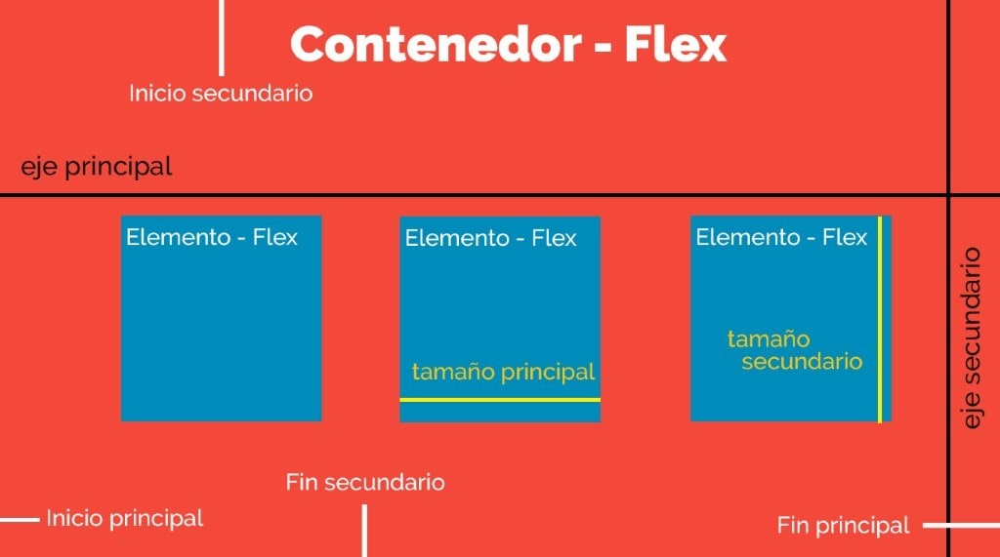

FlexBox
Permite maquetar nuestras páginas web de una manera mucho más fácil de lo que se hacía con la forma tradicional, en la que utilizábamos propiedades como float o position, entre otras.
Flexbox
Se construirá más adelante con CSS y más contenedores.
Imagen 2. Contenedor con Flex Box.
Estructura
La estructura de Flexbox se compone de contenedores padre e hijos.
El Contenedor-Flex es nuestro contenedor padre y el Elemento-Flex es nuestro elemento hijo.
Imagen 3. Ejes del contenedor.
El Contendor-Flex contiene direcciones que definen el origen y el fin del flujo de Elementos-Flex:
- Inicio Principal
- Fin Principal
- Inicio Secundario
- Fin Secundario
Cada Elemento-Flex está definido por sus dimensiones, anchura(tamaño principal) y altura(tamaño secundario) que dependen del eje principal y el eje secundario.
Propiedades
Para usar Flex Box se debe utilizar la propiedad "display" con el valor de "flex o inline-flex; ya podremos acceder a las propiedades flex box.
flex-direction: Esta propiedad permite alterar y determinar el eje que tomarán los elementos hijos.
flex-wrap: Esta propiedad hace que los elementos se dispongan en diferentes ejes, por defecto todos los elementos hijos trataran de colocarse en un solo eje.
justify-content: Esta propiedad ayuda a ordenar los elementos hijos a lo largo de los ejes horizontales, controla su posicionamiento.
align-items: Esta propiedad ayuda a ordenar los elementos hijos a lo largo de los ejes verticales, controla su posicionamiento.
Ver en mozilla developerCss Grid
El CSS grid se puede utilizar para lograr muchos diseños diferentes. También se destaca por permitir dividir una página en áreas o regiones principales
Por definir la relación en términos de tamaño, posición y capas entre partes de un control construido a partir de primitivas HTML.
Css Grid
Se construirá más adelante con CSS y más contenedores.
Imagen 4. Contenedor con CSS Grid.
Estructura
La estructura de CSS Grid se compone de contenedores padre e hijos.
El Contenedor-grid es nuestro contenedor padre y el Elemento-grid es nuestro elemento hijo.

Imagen 5. Modelo Grid.
El Contendor-grid se divide en diferentes áreas dependiendo las columnas y filas que se especifiquen, desde este contenedor es posible modificar la apariencia de los elementos hijos y su disposición.
Cada Elemento-Grid estará posicionado en una celda, es posible modificar este posicionamiento usando de referencia el número de celda y columna a la que el elemento se debe extender.
Propiedades
Para usar CSS Grid se debe utilizar la propiedad "display" con el valor de "grid"; ya podremos acceder a las propiedades de css grid.
También se pueden usar algunas propiedades de Flex Box.
grid-template: Esta propiedad permite determinar el numero de columnas, filas y áreas, es una abreviación de a las propiedades grid-template-columns, grid-template-rows y grid-template-areas
grid-row y grid-column: Estas propiedades permiten ubicar dentro de las celdas cada contenedor.
gap: Esta propiedad permite dar espacio entre los diferentes contenedores, es una abreviación a column-gap y row-gap.
Ver en mozilla developerReferencias Bibliográficas
Cabrera, G. (2020, 5 febrero). Flexbox - ¿Qué es y para qué sirve? Somos PNT. https://somospnt.com/blog/148-flexbox-que-es-y-para-que-sirve
Aceves, D. (2020, 6 febrero). Qué es CSS Grid Layout. Desarrollo Web. https://desarrolloweb.com/articulos/que-es-css-grid-layout.html
CSS Grid Layout - CSS | MDN. (2020, 21 agosto). Mozilla Developer. https://developer.mozilla.org/es/docs/Web/CSS/CSS_Grid_Layout